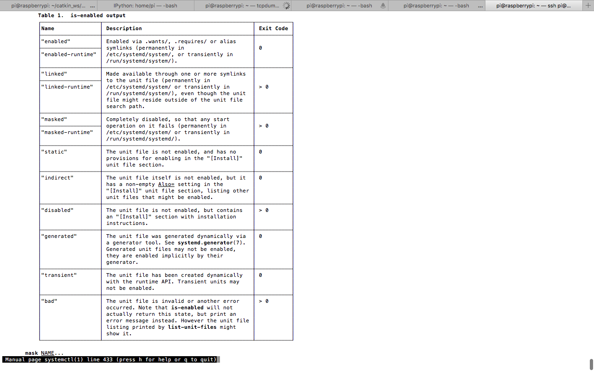

Programming, robotics, traveling
systemctl start SOME_SERVICE
systemctl stop SOME_SERVICE
systemctl enable SOME_SERVICE
systemctl disable SOME_SERVICE
journalctl -f -u SOME_SERVICE
journalctl -u SOME_SERVICE --since="2017-08-14 00:00:00"
Чтобы добавить свой сервис, можно либо выполнить команду sudo systemctl enable <path-to-service-file> или, лучше, добавить его в директорию /etc/systemd/system/ с расширением .service. Также есть другие пути, подробнее ниже:

Источники: